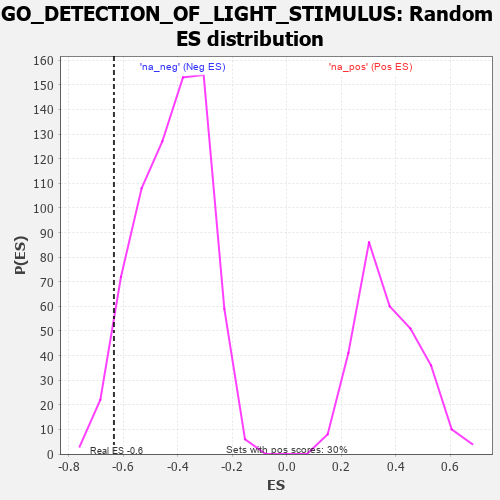

| | | Dataset | 7d |
| Phenotype | NoPhenotypeAvailable |
| Upregulated in class | na_neg |
| GeneSet | GO_DETECTION_OF_LIGHT_STIMULUS |
| Enrichment Score (ES) | -0.63347644 |
| Normalized Enrichment Score (NES) | -1.5096772 |
| Nominal p-value | 0.042613637 |
| FDR q-value | 0.1804235 |
| FWER p-Value | 1.0 |
Table: GSEA Results Summary
 Fig 1: Enrichment plot: GO_DETECTION_OF_LIGHT_STIMULUS
Fig 1: Enrichment plot: GO_DETECTION_OF_LIGHT_STIMULUS
Profile of the Running ES Score & Positions of GeneSet Members on the Rank Ordered List
| PROBE | GENE SYMBOL | GENE_TITLE | RANK IN GENE LIST | RANK METRIC SCORE | RUNNING ES | CORE ENRICHMENT | | 1 | RGR | | | 303 | 0.814 | 0.0127 | No |
| 2 | EYS | | | 654 | 0.575 | 0.0046 | No |
| 3 | FNTB | | | 1270 | 0.436 | -0.0455 | No |
| 4 | FNTA | | | 2755 | 0.190 | -0.2202 | No |
| 5 | NMT2 | | | 2947 | 0.158 | -0.2343 | No |
| 6 | REEP6 | | | 4441 | -0.084 | -0.4168 | No |
| 7 | CNGA1 | | | 5931 | -0.445 | -0.5761 | No |
| 8 | TRPC3 | | | 6035 | -0.483 | -0.5590 | No |
| 9 | NR2E3 | | | 6048 | -0.488 | -0.5300 | No |
| 10 | ABCA4 | | | 6872 | -0.851 | -0.5803 | Yes |
| 11 | OPN4 | | | 7072 | -0.978 | -0.5443 | Yes |
| 12 | CNGB1 | | | 7222 | -1.096 | -0.4946 | Yes |
| 13 | CALM1 | | | 7567 | -1.499 | -0.4443 | Yes |
| 14 | BEST1 | | | 7601 | -1.554 | -0.3515 | Yes |
| 15 | ASIC2 | | | 7917 | -2.995 | -0.2041 | Yes |
| 16 | ARRB1 | | | 7935 | -3.377 | 0.0045 | Yes |
Table: GSEA details [plain text format]

Fig 2: GO_DETECTION_OF_LIGHT_STIMULUS: Random ES distribution
Gene set null distribution of ES for GO_DETECTION_OF_LIGHT_STIMULUS